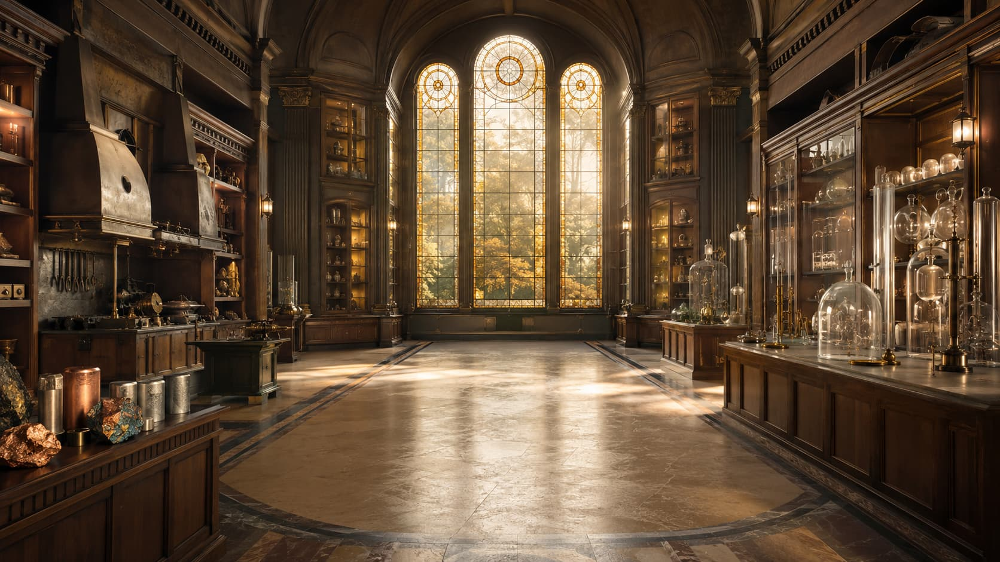

The Pavilion of Oxides
Investigate substances formed by two elements, one of them oxygen � before memorizing any rule.

Professor Rafaela
Let's begin.

Study complete
Investigate substances formed by two elements, one of them oxygen � before memorizing any rule.
